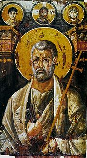

| Апостол Пётр
Материал из Википедии — свободной энциклопедии |
|  Святой Пётр, икона VI века. Монастырь Святой Екатерины (Синай) |
Апо́стол Пётр (греч. Απόστολος Πέτρος; умер около 64 в Риме) в христианстве — один из
двенадцати апостолов (учеников) Иисуса Христа. В католицизме традиционно считается первым папой
Римским.
Апостол в ЕвангелияхРодился в Вифсаиде в семье простого рыбака Ионы. Первоначальное имя апостола было Симон (ивр. שמעון — Шимон). Имя Пётр (Petrus, от греч. πέτρος — камень, скала) ему дал Иисус. Он был женат и работал рыбаком вместе со своим братом Андреем. Встретив Петра и Андрея, Иисус сказал: «Идите за Мной, и Я вас сделаю ловцами человеков» (Мф.4:19).Став апостолом Иисуса Христа, он сопутствовал ему во всех путях его земной жизни. Пётр был одним из любимых учеников Иисуса. На вопрос Иисуса ученикам, что они о нём думают, Пётр сказал, что он есть «Христос, сын Бога живого». В ответ Иисус произнёс: « Я говорю тебе: ты - Пётр, и на сем камне Я создам Церковь Мою, и врата ада не одолеют её; и дам тебе ключи Царства Небесного: и что свяжешь на земле, то будет связано на небесах, и что разрешишь на земле, то будет разрешено на небесах (Мф.16:18-19) » По характеру Пётр был очень живой и вспыльчивый: именно он пожелал идти по воде, чтобы подойти к Иисусу и именно он отрубил ухо рабу первосвященника в Гефсиманском саду. В ночь после ареста Иисуса Пётр, как и предсказывал учитель, проявил слабость и, боясь навлечь на себя гонения, трижды отрёкся от него (см. также раба придверница). Но позже Пётр искренне покаялся и был прощён Господом. Вместе с Иаковом и Иоанном присутствовал на горе Фавор, когда совершилось преображение Иисуса. Пётр является автором двух Соборных посланий, вошедших в Новый Завет. |
Апостол в Деяниях и церковных преданияхПо вознесении Господа апостол Пётр проповедовал слово Божие в разных странах и при этом совершал великие чудеса — воскрешал мёртвых, исцелял больных и немощных, возглавил коллегию двенадцати апостолов. По преданию[1] 25 лет занимал пост епископа Рима — с 43 по 67—68 гг.. Однако это предание является довольно поздним, и поэтому большинство современных исследователей полагает, что апостол Пётр прибыл в Рим в начале 60-х гг. I в.Арестованный в 42 году по приказу Ирода Агриппы I, царя Иудеи, был заточён в тюрьму в Иерусалиме, откуда спустя несколько дней спасся, как о том повествуют Деяния Апостолов. В 49 году принимал участие в Апостольском соборе в Иерусалиме, на котором был согласован с другими апостолами, в том числе с апостолом Павлом из Тарса, вопрос о том, как следует поступать по отношению к язычникам, желающим вступить в христианские общины. Антиохийская православная церковь (Римский Православный Патриархат Антиохии и всего Востока) ведёт патриархальный (епископальный) ряд от апостола Петра, который, по преданиям, вместе с апостолом Павлом, являются её основателями. По преданию, во время гонения императора Нерона на христиан апостол Пётр был распят на перевёрнутом кресте в 64 году (по другой версии — в 67—68 гг.), вниз головой по его желанию, потому как считал себя недостойным умереть смертью своего Господа. |
Воскрешение мёртвыхПо мнению церкви апостол Пётр проповедовал с такой силой, что разом обращал ко Христу до пяти тысяч человек, исцелял безнадёжных больных, даже воскрешал умерших. Люди настолько почитали его, что выносили больных прямо на улицы, чтобы хоть тень апостола Петра осенила их. В Иоппии апостол Пётр воскресил умершую девицу Тафифу. Согласно описанию святого Симеона Метафраста апостол Пётр, проповедуя в Анкире Галатийской, воскресил умершего.В описании древнего церковного историка Егезиппа, а также в послании Маркелла Римлянина говорится о воскрешении апостолом Петром юноши царского рода в Риме. Мать юноши пригласила на погребение сына апостола Петра и Симона Волхва, прославленных в народе тем, что они воскрешали умерших. Для доказательства бесовства Симона Волхва (ряд учёных считают, что Симон Волхв из «Деяний» и Симон Волхв, основатель гностической секты — не одно и тоже лицо[2][3]), которого в Риме многие почитали как Бога, апостол Пётр воскресил юношу на глазах многочисленного народа[4][5]. |
Случай с Ананием и СапфиройВ «Деяниях Святых Апостолов» описывается случай и иного характера. По обычаям ранних христиан «Не было между ними никого нуждающегося; ибо все, которые владели землями или домами, продавая их, приносили цену проданного и полагали к ногам Апостолов; и каждому давалось, в чём кто имел нужду» (Деян.4:34). Эпизод произошёл, когда Пётр узнал, что Анания вместе со своей женой Сапфирой утаил часть денег, полученных от продажи своего имущества. Пётр сказал Анании:« Анания! Для чего ты допустил сатане вложить в сердце твоё мысль солгать Духу Святому и утаить из цены земли? Чем ты владел, не твоё ли было, и приобретённое продажею не в твоей ли власти находилось? Для чего ты положил это в сердце твоём? Ты солгал не человекам, а Богу. Услышав сии слова, Анания пал бездыханен; и великий страх объял всех, слышавших это. И встав, юноши приготовили его к погребению и, вынеся, похоронили. (Деян.5:3-6) » Такая же участь постигла и Сапфиру. Когда она пришла, апостолы решили подвергнуть её испытанию. Умолчав о том, что произошло с её мужем, они спросили, какова сумма, полученная ими от продажи имущества. После того как Сапфира назвала неправильную цифру, Пётр заявил: « что это согласились вы искусить Духа Господня? вот, входят в двери погребавшие мужа твоего; и тебя вынесут. (Деян.5:9) » После этих слов Сапфира упала замертво у ног апостола, и молодые люди похоронили её рядом с мужем.[6] |
Поиски могилы апостолаСогласно христианскому преданию, древняя римская базилика Константина располагалась над местом захоронения апостола Петра. Позднее здесь же был построен ватиканский Собор святого Петра. С 1939 по 1949 год под собором проводились археологические раскопки, которые обнаружили остатки древнего римского кладбища. В 1952 году был опубликован подробный отчёт, свидетельствующий, что одна из могил этого кладбища особо почиталась уже в I—II веках.Дальнейшие работы проводились под руководством итальянского археолога Маргариты Гуардуччи. В 1964 году вышла её книга «Реликвии Святого Петра под исповедальней ватиканской базилики» (итал. Reliquie Di Pietro Sotto La Confossione della Basílica Vaticana), в которой вероятность, что именно в этой могиле был похоронен Пётр, расценивалась как весьма высокая. Под впечатлением археологических исследований папа Павел VI в 1968 году объявил, что, исходя из исследований учёных, можно полагать, что могила апостола найдена. Однако некоторые учёные не согласились с точкой зрения папы.[7]. |
«Трофей» апостола ПетраДля истории католической церкви и Рима как места пребывания понтифика имеет значение толкование слова «трофей», поскольку некий священник, по имени Гай, живший в Риме во второй половине II века, писал, что «трофеи» апостола Петра остались в Ватикане, а «трофеи» Павла были преданы земле у дороги в Остию. На этом была построена теория, превратившаяся практически в догмат, о том, что Пётр, первый папа римский, был похоронен в Ватикане. Сегодня толкователи признают, что слово «трофей» в данном контексте действительно вероятней всего означает — «то, что осталось от мучеников». Такие видные учёные, как Ренан и Гиньебер, долгое время считали, что слово «трофей» Петра означает «памятник» Петру. Вероятно также, что слово «тропеум» относится к стенам — постройке, которую возвели вокруг предполагаемого захоронения апостола[8]. |
Отрицание факта посещения, смерти и погребения Петра в РимеРяд критиков отмечает отсутствие каких-либо прямых упоминаний в Священном Писании о том, что Пётр посещал Рим. Об этом, например, не сообщает Юстин Мученик, писавший в первой половине II века в Риме. «Согласно Гал.2:9, Пётр, Иаков и Иоанн рукопожатием заключили соглашение с Павлом и Варнавою, что Павел и Варнава проводят свою деятельность среди язычников, а Пётр, Иаков и Иоанн — среди иудеев. Павел, который писал послание к церкви в Риме, в конце его приветствует двадцать семь лиц поимённо, но среди них Пётр не упоминается. Так же и во многих посланиях, которые он писал церквам и отдельным лицам, Пётр не упомянут ни одного раза».[9]При этом о пребывании апостола в Риме пишут раннехристианские авторы: Ориген (III век), Лактанций (нач. IV века), Евсевий Кесарийский («Церковная история», 325 год).[10][11]. Как отмечает шотландский исследователь Александр Хислоп, самое ранее упоминание о пребывании Петра в Риме датируется концом II века, причём это упоминание приведено в сомнительном произведении конца второго — начала третьего столетия под названием «Клементин», где говорится о встрече Петра с Симоном Волхвом. Пётр поставил под сомнение чародейские способности Симона и потребовал доказательств его сверхъестественных способностей. Тогда колдун взлетел в воздух, а Пётр опустил его на землю, да так быстро, что колдун сломал ногу" [12]. Также довод о том, что Пётр не посещал Рим, строится на распределении апостолами мест своей проповеди. Сам Пётр утверждал, что писал своё первое послание из Вавилона (1Петр.5:13) и, по мнению ряда исследователей, он имел ввиду реальный город, а не иносказательное название Рима.[13] Во дни Петра настоящий Вавилон ещё существовал. Кроме того, в Вавилоне была значительная иудейская община[14][15][16]. Так как, по словам Павла (Гал.2:7-9) , Петру было вверено проповедование Благой Вести обрезанным иудеям, то отдельные исследователи предполагают, что он посетил Вавилон с этой целью.[9] [править] Почитание Апостол Пётр почитается в православной и католической церквях. Установлен праздник святых Петра и Павла, как двух наиболее почитаемых апостолов, называемых первоверховными святыми апостолами за особо ревностное служение Господу и распространение веры Христовой. У православных праздник отмечается 12 июля (29 июня по старому стилю), у католиков — 29 июня. В большинстве христианских церквей, согласно церковному преданию, считается, что апостол Пётр был основателем Римской церкви (Католическая церковь почитает его как первого папу). |
Примечания1. ↑ Иероним Стридонский. О знаменитых мужах, гл. I2. ↑ См.: Ганс Йонас. Симон Волхв / Гностицизм (Гностическая религия). — Спб.: Издательство «Лань», 1998. — С. 115; 3. ↑ Walter Richard Cassels. Supernatural Religion: An Inquiry into the Reality of Divine Revelation. — London, 1902. (в pdf, djVu) 4. ↑ Проповедь в праздник святых апостолов Петра и Павла 5. ↑ свт. Димитрий Ростовский. Жития святых. Житие, подвиги и страдание святого славного и всехвального верховного апостола Петра 6. ↑ См. также: Косидовский, Зенон. Глава 3. Деяния святых апостолов и послания. Раздел. Драма Анании и Сапфиры / Сказания евангелистов: Пер. с польск. / Послесл. и примеч. И. С. Свенцицкой. — 2-е изд. — М., 1972. — С. 86-90. 7. ↑ «При проведении раскопок не было обнаружено никаких конкретных следов могилы под эдикулой; не может быть никакой уверенности и в том, что тело св. Петра было когда-либо возвращено палачами христианской общине для его захоронения. При нормальном развитии событий тело того, кто был чужестранцем (перегринус) и в глазах закона обычным преступником, скорее всего бросали в Тибр. […] Более того, в то время не было такой заинтересованности в сохранении телесных останков, какая развилась позднее, когда угасла вера в надвигающийся конец света и начал зарождаться культ мучеников. Следовательно, вероятность того, что тело св. Петра не было возвращено для погребения, представляется # вполне реальной». Jocelyn Toynbee, John Ward Perkins. The Shrine of St. Peter and the Vatican Excavations. London; New York: Longmans, Green, 1956 (Джоселин Тойнби и Джон Уорд Перкинс. «Гробница св. Петра и ватиканские раскопки») 8 ↑ Вокруг Света. Гробница святого Петра 9 ↑ 1 2 Э. Франк «Традиционное христианство. Истина или заблуждение?» 10 ↑ Путешествие св. ап. Петра в Рим и его мученическая смерть. Был ли он епископом Рима // Барсов М. Сборник статей по истолковательному и назидательному чтению деяний святых апостолов 11 ↑ Евсевий Кесарийский. Церковная история 12 ↑ Александр Хислоп. «Два Вавилона» 13 ↑ Болотов В. В. Распространение христианства: Главы из книги История древней Церкви 14 ↑ На протяжении всего первого тысячелетия новой эры вавилонская община была сначала одним из важнейших, а затем и главным духовным центром еврейского народа: достаточно хотя бы упомянуть о Вавилонском Талмуде. — «…И ПОСЕЛИЛ ИХ В ХАЛАХЕ, И В ХАБОРЕ, ПРИ РЕКЕ ГОЗАН, И В ГОРОДАХ МИДИЙСКИХ» (II ЦАР., 17, 6) 15 ↑ Михаил Носовский (Бостон). Откуда происходят восточноевропейские евреи? 16 ↑ Валерий Дымшиц. Евреи на территории бывшего Советского Союза: попытка этнографического наброска (сокращённый вариант) |